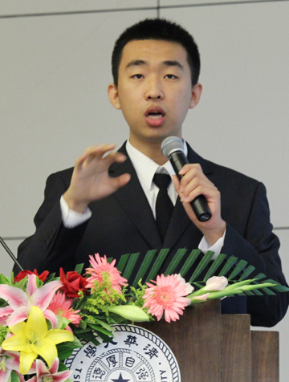

（1）学习方面（三年学分绩名列系里第一名）
在学习方面，自己付出了很多的汗水和努力，所以取得了让自己满意的学习成绩：大学前三年总学分绩95.0，专业课学分绩96.2，均排名系里第一名。辉煌只能代表过去，未来仍需奋斗。希望自己在大四这最后的一年能够继续保持自己的学习状态，同时以清华的学术大师和其他优秀的同学为榜样，力争使自己具备更加扎实的学术基础和更加完善的科研素质，为自己的本科生活画上完美的句号。
（2）科研方面（两篇论文发表在国际会议上，一篇论文投稿国际会议）
大二是我发现自己科研兴趣的关键一年。在大二上学期，我联系了清华大学系统组的陈渝老师，开始了自己的科研旅程，我首先接触到的科研项目是Linux系统下的内核调度，在了解了一段时间之后，我逐渐发现自己在课上积累的知识逐渐派上了用场，《理论计算机科学》课上介绍的二分图匹配、线性规划等算法让我能够完全明白内核调度的理论基础，《计算机组成与系统结构》课上介绍的计算机结构让我能够掌握内核调度的主要过程，学以致用让我感受到了科研的魅力。一年的辛勤终于有了结果，最终我和系统组的陈渝、史元春老师以及博士生崔岩学长合作完成了一篇论文《TowardsPractical Scheduling-Based Multicore Resource Management》（《基于内核调度的多核资源控制系统》），已经投稿到国际会议IEEEInternational Parallel & Distributed Processing Symposium（“国际并行与分布式计算学术会议”）。在系统组的这段经历让我明白了自己在科研方面的浓厚兴趣，也让我对科研有了信心和底气。
同时，为了加深自己对系统方面的理解，在2011年2月份我还加入了微软亚洲研究院(MicrosoftResearch Asia，以下简称MSRA)，成为了研究院的一名实习生，并且也非常幸运地进入了国内最顶级的系统实验室——微软亚洲研究院系统组。在系统组实习，面对一个个极富挑战性的科研难题，有机会和国内最顶级的研究员一起分析讨论问题，使用由成百上千台机器搭建而成的研究平台去解决问题，我感觉每天的生活都充满了激情与挑战。我在MSRA的实习项目是与分布式系统相关的优化与改进，这让我了解到了系统领域不同于内核调度的另一个方面——分布式系统。MSRA还专门为我配备了一位导师，在导师的悉心指引和教导下，我对计算机系统的理解又提升了一个层次。从11年4月份开始，微软硅谷研究院的系统组也加入了我们的项目，这让我有机会和美国的系统“大牛”们并肩作战，同时也让我了解到了“美国式”的科研套路，的确受益匪浅。同时，在MSRA我还有机会看到很多计算机领域的学术大师，与他们的近距离接触更加让我感受到了计算机科学的魅力，也更加坚定了自己将来从事计算机科学研究的决心。
在大三下学期，我非常荣幸的获得了赴麻省理工学院（MIT）交换学习的机会，更加荣幸的进入到了MIT的并行化操作系统实验室，在MIT两位资深导师Zeldovich教授和Kaashoek教授的指导下进行科学探索。在MIT期间的科研探索，让我体会到了世界最尖端科学研究的魅力，也让我更加深切的热爱上了我正在研究的领域。在这半年期间，我每天都投入大量的时间在科研项目的探索、研发上，有时为了赶一个实验结果，甚至要坚持工作到凌晨三四点才可以休息。半年的努力终于换来了回报，我们最终的实验成果凝结成了两篇科研论文（均已经发表）。其中一篇论文发表在了系统领域最顶级的国际会议OSDI上，OSDI每两年举办一次，每次只收录20余篇论文，也是系统领域最难发表论文的会议。更值得高兴的是，这篇论文也使得清华成为本届OSDI上唯一有论文发表的中国高校。
（3）竞赛方面（物理竞赛特等奖，程序设计竞赛冠军）
我主要参加了物理和程序设计两门竞赛。在物理竞赛方面，由于不是物理系出身，自然没有太多的时间专门练习，非常感谢物理系的王山鹰老师能够在赛前抽出时间对我耐心辅导，还专门找到了以前历届的比赛试题让我练习。通过老师的耐心辅导和我自己的赛前努力，我最终获得了北京市特等奖第二名的好成绩。
在程序设计竞赛方面，出于对ACM竞赛（国际大学生程序设计竞赛）的热爱，在大学三年期间，我一直留在清华ACM队中。功夫不负有心人，在2011年10月举行的ACM比赛中，我和另外两名计算机系同学组成的代表队一举在130余支代表队中拔得头筹，为清华捧得了一个宝贵的冠军奖杯！此外，在2010年10月举行的成都赛区比赛中，我们同样不负众望，在140余支参赛队伍中取得了第8名的成绩，为清华夺得了金牌。大四期间，我还会继续就在清华ACM队中，为学弟学妹们传授经验，尽自己作为清华人的光和热。
（4）社会工作方面（计科90班班长，学堂计划启动仪式学生代表，院足球队队员，志愿者、标兵）
非常荣幸自己可以在大二一年担任计科90班的班长，有机会为大家服务。大二一年我确实在班级工作方面付出了很多努力，一年的班级工作进展的都比较顺利：在颐和园秋游中，我看到了同学们展现出的诙谐与幽默；在姚班大春游中，我感受到了同学之间的友情与亲情；在与人文学院的联谊中，我见证了了同学们的豪放与激情；在承办羽毛球比赛的过程中，我又目睹了同学们的老练与高效。一年的班级工作确实让我受益匪浅：承办各种比赛让我明白了如何更合理的分配任务；组织各种活动让我懂得了很多待人接物的道理；大量的班级事务、学业任务和科研任务又让我学会了如何更加合理的安排自己的时间。总的来说，一年的班长职务让我付出了很多，也收获了很多。我在大三虽然卸掉了班长一职，但仍然非常乐意为计科90的同学们服务。
值得一提的是，我非常荣幸能够在在清华学堂人才培养计划启动仪式上作为唯一的学生代表，在顾秉林校长之后、姚期智院士之前发言。非常感谢“清华学堂计划”把如此重要的任务交给了我，也非常感谢学校对我的信任和厚爱。独自一人站在庄严的讲台上，面对台下数百人投来的殷切眼光，我感受到了自己肩上的责任与使命，也默默立下志愿，将来一定在计算机科学领域有所建树、有所作为，为中国的计算机科学事业贡献自己的一份力量。入选学堂计划，是光荣也是使命，是肯定也是鞭策，重任在肩，我定当全力以赴！